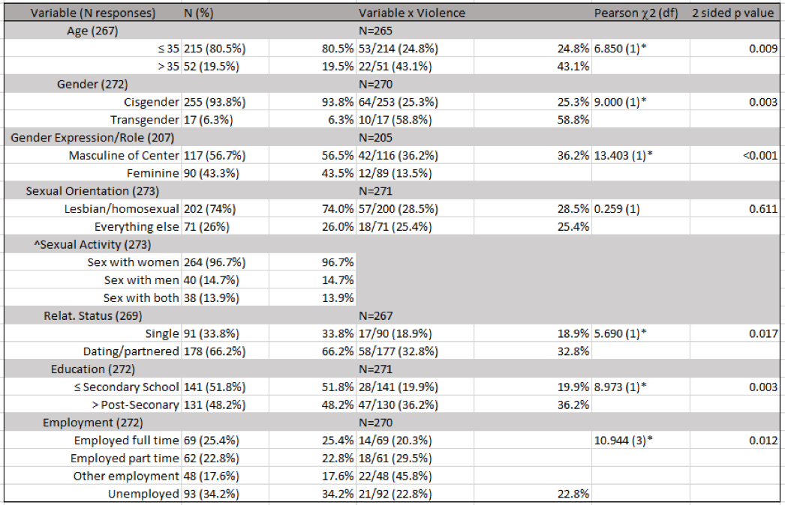
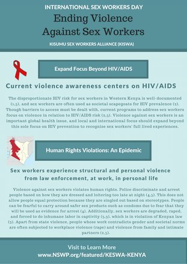
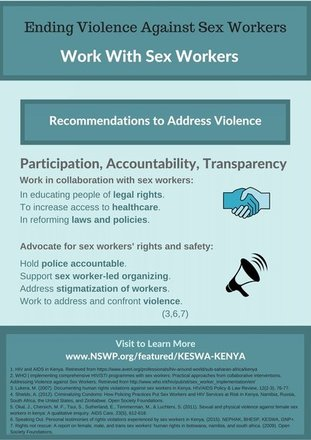

Publications and Presentations
- Wilson, BDM, Choi, SK, Augustaitis, L, Jadwin-Cakmak, L, Neubauer, LC, Harper, GW (in preparation). Sexual and gender minorities assigned female at birth in Western Kenya: Health and rights concerns. Los Angeles, CA: The Williams Institute and UCLA Center for Health Policy Research
- Abour, P, Neubauer, LC, Wilson, BDM, Augustaitis, L, Jadwin-Cakmak, L & Harper, GW (2018). Kufunua: Exploring the health-related needs of sexual and gender-minority women (SGMW) in Western Kenya. Presented at the Annual Review Meeting 2018, University of Nairobi STD/AIDS Collaborative Group
Background
I was brought onto the Kufunua project after initial data collection had been collected to create a digital dataset, clean the data, and complete analyses. I have been working on a number of projects with Dr. Harper's research team at the University of Michigan School of Public Health. I have contributed to LGBTQ research projects working with community partners Western Kenya, the Williams Institute at UCLA Law School, and Michigan Medicine in Southeast Michigan.
Research Design
- Type: Community Sexual and Reproductive Health Survey
- Sample size: 273
- Sample: Convenience Snowball
- Data collection: In person interviews facilitated by a community partner
Methods
After deleting duplicate responses, the total sample size was reduced to 273. I completed analyses in SPSS. In addition to computing descriptive statistics of demographics, menstruation needs, and social/legal needs at this time, I was interested in exploring frequencies of reported violence (physical and verbal) and sexual violence across respondents' sexual orientation (SO) and gender identity and expression (GIE) labels.
I cleaned and coded multiple response variables accordingly into groupings of SO, GI, and GE labels. Respondents were coded into a Transgender variable, if they answered any gender identity other than woman (all respondents were assigned female at birth). Respondents were coded as Masculine if they answered butch, stem, all-gender, androgynous, or another masculine type write in.
To test for group differences I ran Pearson chi-squared tests.
Hypothesis
I hypothesized that respondents that identify either with a masculine gender expression or with transgender status will have reported higher rates of violence than cisgender respondents that present femininely.
Results
The partnered, masculine gender expression, and transgender survey respondent groups were more likely to report experiencing violence than single, feminine, and cisgender groups, respectively.
Discussion
Research in Kenya disproportionately focuses on gay and bisexual men and trans women due to associated HIV risk factors. However, within the LGBTQ+ community, female assigned at birth SGM people have unique needs. The differences in reported physical, verbal, and sexual violence between groups within the survey sample suggest that resources for the group should be attentive to gender identity and expression group differences and risk of experiencing violence.
Violence Against Sex Workers
Background
I have been working in a research group that has relationships with several non-profit organizations in Kenya. My research director forwarded me a request from one partner to create a fact sheet to raise awareness against sex workers for International Sex Workers Day. /
Methods
The intended audience was not just for researchers but also the community at large. As such, I wanted to keep language accessible but informative. I did a literature search on topics such as criminalizing condoms and sex worker violence prevalence. Additionally, I looked for policy briefs published by organizations that work with sex workers and documented their recommendations to address violence.
Results
After completing comprehensive literature searches. I created these infographics detailing that the current attention to harm that sex workers experience centers on HIV/AIDS. While structural barriers to care and preventive barriers exist, there are significant other factors such as unsafe workplaces where people are unable to negotiate their safety. Additionally, sex workers are often targeted for carrying condoms and experience violence from law enforcement.
It is essential that organizations wishing to improve sex workers' conditions work with sex workers collaboratively, addressing their greatest needs first.
 